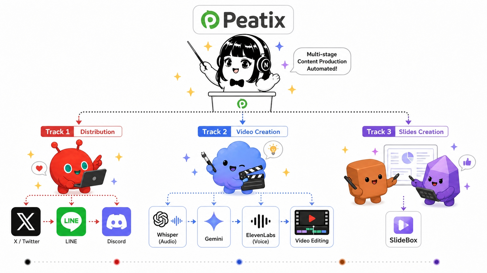

PLAI / SERVICE 04 — FREE GUIDE
AI MARKETINGSNS・動画・LP・メルマガをバラバラに動かさず、AIで統合運用する設計の全容を公開します。
ISSUE
SNSでフォロワーは増えたが、問い合わせや商談に繋がらない。
LPを作っても更新できず、放置されている。
チャネルごとに担当者が分断され、メッセージがバラバラ。
広告費を増やしてもCVRが上がらない。設計から見直したい。
APPROACH
SNS・動画・LP・メルマガを別々のチームで動かすのではなく、AIで連動する仕組みを設計します。
CH 01
SNS
認知獲得・ファン化。バズ→興味喚起のフックを担当。
CH 02
動画
サービス理解の促進。SNS→LPへの橋渡しを担う。
CH 03
LP
問い合わせ・無料相談への変換。CVR最適化を継続実行。
CH 04
メルマガ
関係性育成・再訪促進。検討中の見込み顧客をクロージングまで運ぶ。
CH 05
記事 (SEO)
指名検索・関連検索からの恒常流入を増やす。
CH 06
資料(リードマグネット)
メアド獲得とリード育成の起点。本資料も同設計で運用中。
JOURNEY
認知 — SNS / 動画
バズ投稿・短尺動画でブランドと存在を知ってもらう。
興味 — 記事 / LP
SEO記事と業種別LPでサービスへの理解を深める。
検討 — リードマグネット / メルマガ
無料資料を起点にメアド獲得 → 検討段階の育成。
行動 — 無料相談 / 問い合わせ
タイミングが合った見込み顧客から商談化。AIが反応を予測してフォロー。
AI INTEGRATION

各チャネルの実績データ・反応データ・コンバージョンデータをAIが一元的に読み、次に何を出すべきかを設計します。「データはあるが活かせていない」状態を、設計＋実行の両面で解決します。
RESULT
PLaiは、本サイト・記事・SNS・スライド資料すべてを統合運用しています。
AI生成
(全コンテンツ)
SNS総フォロワー
(8アカウント)
並列マーケティング
運用中
創業初年度
年商突破
WHY PLAI
01
自社100%実装
代理店ではなく、自社マーケを全部AI化してきた当事者ノウハウを提供します。
02
設計＋実行の一気通貫
戦略立案で終わらず、SNS運用・LP制作・メルマガ実装まで担当できる体制です。
03
月次レビューで継続改善
データを見ながら毎月戦略を再設計。1年で売上構造を変えます。
PROCESS
無料マーケ診断
現状のチャネル・KPI・顧客導線を整理し、優先課題を可視化します。
統合マーケ設計
4〜6チャネルの連動設計、ペルソナ別ジャーニー、KPI設計まで提示します。
実装・運用
必要なLP・記事・SNS設計・メルマガ実装をワンチームで担当。
月次レビュー＋改善
数値・反応データから次月の方針を再設計し続けます。
SCOPE
戦略立案だけのスポット契約（1〜2ヶ月）、設計＋実装のプロジェクト契約（3〜6ヶ月）、継続運用の月額契約まで、ご要望に合わせて設計します。
まずは無料マーケ診断で、現状を整理させてください。
NEXT STEP
無料マーケ診断で、貴社の伸びしろを定量化します。
導入の必要性も含めて、率直にお話しします。